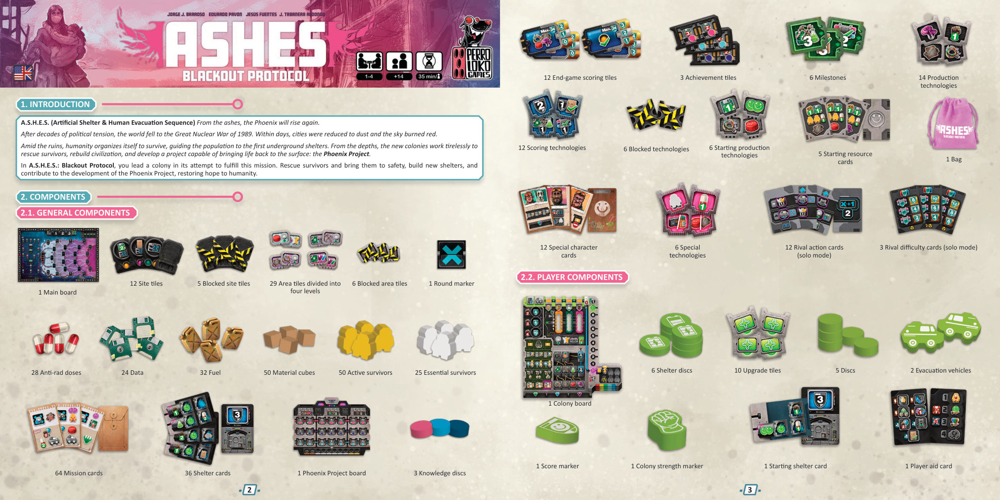
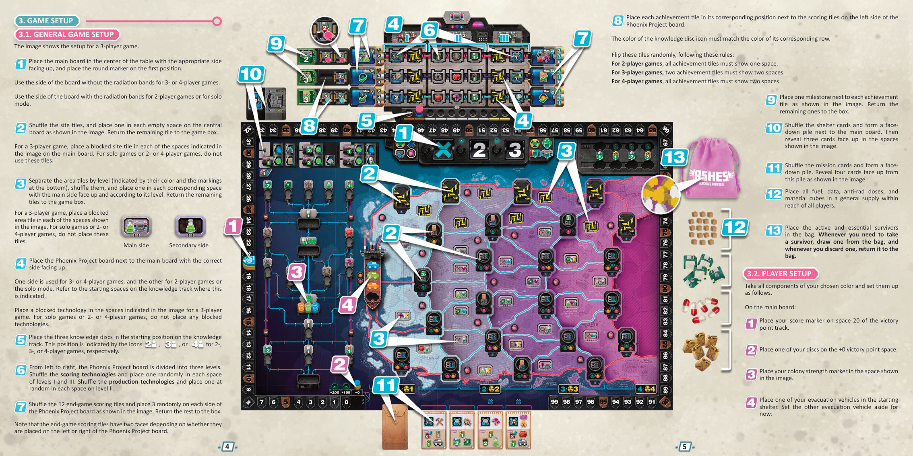
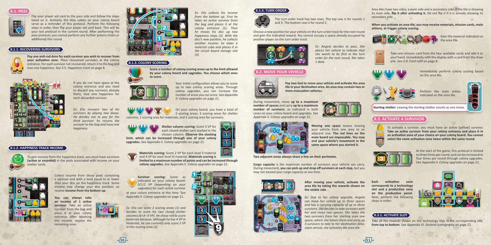
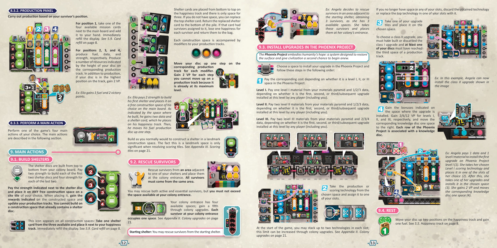
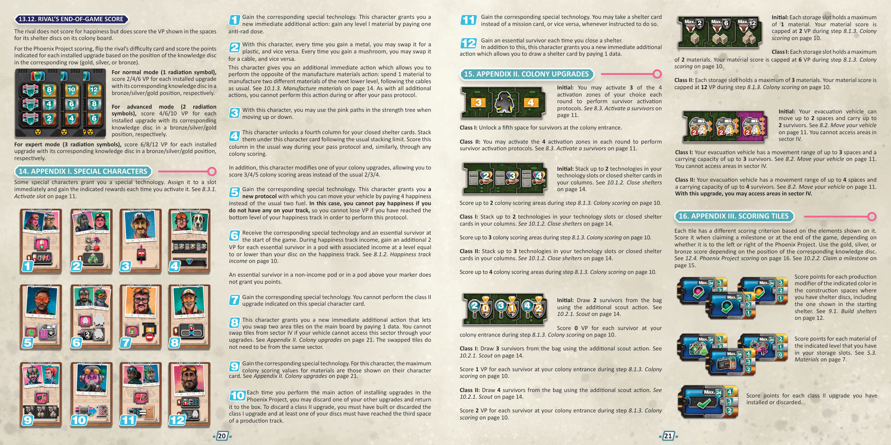
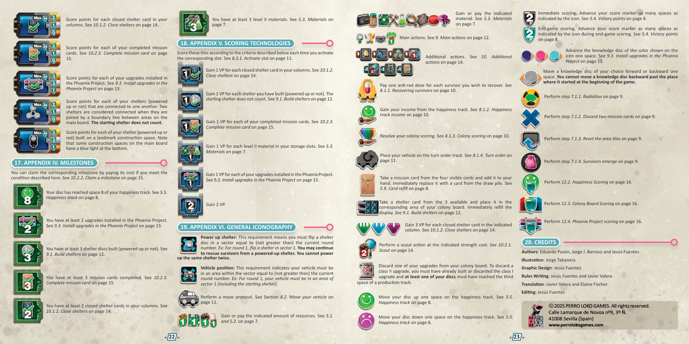

01简介
A.S.H.E.S.（Artificial Shelter & Human Evacuation Sequence，人工避难所与人类撤离序列）——灰烬之中，凤凰必将重生。
经历了数十年的政治紧张，世界在 1989 年的大核战中崩塌。数日之内，城市化为尘土，天空烧成赤红。
废墟之间，人类组织起来求生，把民众引导进第一批地下避难所。新生的殖民地自地底深处不知疲倦地工作：营救幸存者、重建文明，并开发一个能让生命重返地表的计划——凤凰计划。
在《A.S.H.E.S.：停电协议》中，你领导一座殖民地完成这项使命。营救幸存者并把他们带到安全处，建造新的避难所，为凤凰计划的发展做出贡献，让人性重获希望。
02配件
2.1 公共配件
| 组件 | 数量 | 说明 |
|---|---|---|
| 主版图 | 1 块 | 双面；一面带辐射带，用于双人局与单人模式 |
| 场址板块 | 12 块 | 放置于主版图中央 |
| 封锁场址板块 | 5 块 | 仅三人局使用 |
| 区域板块 | 29 块 | 分为四个等级（以颜色与底部标记区分） |
| 封锁区域板块 | 6 块 | 仅三人局使用 |
| 轮次标记 | 1 个 | 放在主版图轮次轨第一格 |
| 抗辐射剂 | 28 个 | 资源 |
| 数据 | 24 个 | 资源 |
| 燃料 | 32 个 | 资源 |
| 材料方块 | 50 个 | 九种材料 |
| 活跃幸存者 | 50 个 | 黄色 |
| 关键幸存者 | 25 个 | 白色 |
| 任务卡 | 64 张 | 正面朝上展示 4 张 |
| 避难所卡 | 36 张 | 正面朝上展示 3 张 |
| 凤凰计划版图 | 1 块 | 双面；一面用于双人局与单人模式 |
| 知识圆片 | 3 个 | 放在知识轨起始位置 |
| 终局计分板块 | 12 块 | 正反面不同，取决于放在凤凰计划版图左侧还是右侧 |
| 成就板块 | 3 块 | 放在计分板块旁 |
| 里程碑 | 6 块 | 每个成就板块旁放 1 块 |
| 生产技术 | 14 块 | 随机放在凤凰计划 II 级各格 |
| 计分科技 | 12 块 | 随机放在凤凰计划 I 级与 III 级各格 |
| 封锁科技 | 6 块 | 仅三人局使用 |
| 起始生产技术 | 6 块 | 与起始资源卡配对 |
| 起始资源卡 | 5 张 | 设置时翻出「玩家人数 +1」张 |
| 布袋 | 1 个 | 装全部幸存者 |
| 特殊角色卡 | 12 张 | 每人 1 张 |
| 特殊科技 | 6 块 | 由特殊角色授予 |
| 对手行动卡 | 12 张 | 单人模式 |
| 对手难度卡 | 3 张 | 单人模式 |
2.2 玩家配件（每色一套）
| 组件 | 数量 | 说明 |
|---|---|---|
| 殖民地板 | 1 块 | 含材料金字塔、生产面板、计分区与三个协议提示 |
| 避难所圆片 | 6 个 | 在殖民地板上每格叠 2 个 |
| 升级板块 | 10 块 | 含 I 级与 II 级 |
| 圆片 | 5 个 | 幸福轨 1 个、生产轨 3 个、回合顺序轨 1 个 |
| 撤离车 | 2 辆 | 1 辆起始避难所，1 辆回合顺序轨 |
| 分数标记 | 1 个 | 放在胜利分轨第 20 格 |
| 殖民地强度标记 | 1 个 | 放在主版图强度树上 |
| 起始避难所卡 | 1 张 | 放在幸福轨旁 |
| 玩家提示卡 | 1 张 | 双面；停手时翻到停手面 |

03游戏设置
下图为三人局的设置示意。设置分两步：先完成公共设置，再各自完成玩家设置。
3.1 公共设置
- 把主版图放在桌子中央，按人数选用正确的一面，并把轮次标记放在第一格。
三人局或四人局使用不带辐射带的一面；双人局或单人模式使用带辐射带的一面。 - 洗匀场址板块，按图示在中央版图的每个空格各放一块，剩余的退回盒中。
- 三人局时，在主版图图示的空格各放一块封锁场址板块。单人模式、双人局、四人局都不使用这些板块。
- 按等级（以颜色与底部标记区分）分开区域板块，分别洗匀，按等级把一块放到对应空格，主面朝上。剩余的退回盒中。
每块区域板块有两面：主面与副面。 - 三人局时，在图示的空格各放一块封锁区域板块。单人模式、双人局、四人局都不放这些板块。
- 把凤凰计划版图放在主版图旁，按人数选用正确的一面（版图上有标示知识轨起始格的示意图标）。
一面用于三人局或四人局，另一面用于双人局或单人模式。 - 三人局时，在图示的空格各放一块封锁科技。单人模式、双人局、四人局都不放封锁科技。
- 把三个知识圆片放在知识轨的起始位置。该位置以图标标示，分别对应双人局、三人局、四人局。
- 凤凰计划版图从左到右分为三个等级。洗匀计分科技，在 I 级与 III 级的每个空格各随机放一块；洗匀生产技术，在 II 级的每个空格各随机放一块。
- 洗匀 12 块终局计分板块，按图示在凤凰计划版图每侧各随机放 3 块，剩余退回盒中。
注意：终局计分板块有两面，取决于放在版图左侧还是右侧。 - 把每块成就板块放在凤凰计划版图左侧计分板块旁的对应位置。知识圆片图标的颜色必须与该行的颜色一致。按以下规则随机翻面：
- 双人局：所有成就板块都显示一格。
- 三人局：有两块成就板块显示两格。
- 四人局：所有成就板块都显示两格。
- 按图示在每个成就板块旁放一块里程碑，剩余的退回盒中。
- 洗匀避难所卡，在主版图旁成背面朝下的牌堆，然后按图示翻出三张正面朝上。
- 洗匀任务卡成背面朝下的牌堆，按图示翻出四张正面朝上。
- 把全部燃料、数据、抗辐射剂与材料方块作为公共供应，放在所有玩家都能拿到的地方。
- 把活跃幸存者与关键幸存者放进布袋。每当需要取一名幸存者，就从袋中抽一个；每当弃掉一个，就放回袋中。
3.2 玩家设置
取走你所选颜色的全部配件，按以下方式摆好。
在主版图上：
- 把分数标记放在胜利分轨第 20 格。
- 把一个圆片放在 +0 胜利分格。
- 把殖民地强度标记放在图示的格子。
- 把一辆撤离车放在起始避难所。另一辆撤离车暂时放到一旁。
在自己的游戏区：
- 放好殖民地板。
- 在殖民地板每个位置叠放两个避难所圆片，图示的一面朝上。
- 按图示放好 10 块升级板块。
- 把剩下四个圆片这样放：一个放在幸福轨的 3，另外三个放在各条生产轨的第一格。
- 把一张玩家提示卡放在殖民地板旁。
- 按图示把起始避难所卡放在幸福轨旁。
第一次玩《ASHES》时，取背面带星号标记的特殊角色卡，洗匀后每人随机发一张，正面朝上放在自己的殖民地板旁。
之后的游戏中，洗匀全部特殊角色卡，每人发两张。每人从中选一张正面朝上放在殖民地板旁，另一张退回盒中。
洗匀起始资源卡，翻出比玩家人数多一张。再取起始生产技术，随机在每张卡旁放一块，组成「卡 + 科技」组合。例：三人局共有 4 个组合。
起始玩家是最近一次用微波炉加热过东西的人。把其第二辆撤离车放在回合顺序轨第一格；其余玩家按座位顺时针顺序，依次把第二辆撤离车放到下一格。
按回合顺序轨上的位置，给第二、第三、第四位玩家分别发放 1 / 2 / 3 个数据。
三人局时，回合顺序轨最右侧的格子不使用。取未参战颜色的撤离车占住这些格子。
按回合顺序轨的逆序，每位玩家选择一个「起始资源卡 + 起始生产技术」组合：取得所示资源，把科技放进你选择的槽位，从袋中抽出所示数量的幸存者放在殖民地入口。
角色卡授予的特殊科技或幸存者也一并处理，然后把起始资源卡退回盒中。

04开始游戏前
规则 5.1 与 5.3 解释了各种资源符号的含义。这些资源，连同下一节讲述的强度，是游戏中的主要资源。
- 绿色圆圈图标
- 表示你从公共供应获得所示数量的该资源，放进自己的供应区。例：从公共供应获得 2 个数据，放在自己的游戏区。
- 红色圆圈图标
- 表示你必须从自己的供应区支付所示数量的该资源，退回公共供应。例：从游戏区支付 1 个燃料，退回公共供应。
05通用概念
5.1 燃料、数据与抗辐射剂
这三种是可以用标记表示的资源，加上 5.2 的殖民地强度，构成本作的主要资源。获得与支付都用上述绿圈／红圈图标表示。
5.2 殖民地强度
与前几种资源不同，殖民地强度不用标记表示，而是记录在主版图的强度树上，由你的殖民地强度标记指示当前强度。
- 每获得 1 点强度，把殖民地强度标记在树上向上移动一格；数量显示在图标旁的绿圈内。向上移动时，在树上选择路径。
- 每支付 1 点强度，把标记在树上向下移动一格；数量显示在图标上的红圈内。向下移动时，在树上选择路径。
- 向上移动时，获得途中经过的每一格的奖励；向下移动时不获得任何奖励。
例：Angela 在强度树上向上移动两格，获得一个塑料和一个金属。
5.3 材料
殖民地板上有你的材料金字塔，共九个独立存储格，每格对应一种材料。材料图标表示你获得该种材料：从公共供应取一个材料方块，放进对应存储格。例：取一个材料方块放进塑料存储格。
带红色「×」的图标表示你必须支付该材料。例：从金属存储格退回一个方块到公共供应。
材料按位置分为 I 级、II 级、III 级，分别位于材料金字塔的下排、中排、上排。
开局时每个存储格只能放一个方块。若某格已满，就不能再获得该种材料。升级殖民地可以提高容量（见附录 II）。
如材料金字塔所示，你可以用紧下一级的两种不同材料制造一个更高级的材料（见 10.1.3）。
5.4 胜利分
下文统一把胜利分简称为 VP。
- 即时计分图标
- 立即结算：按图标所示格数，把分数标记在胜利分轨上前进。
- 扣分图标
- 立即把分数标记在胜利分轨上后退所示格数。
- 终局计分图标
- 在游戏结束时才结算。
你的分数在胜利分轨上永远不会低于 0。
分数标记跑完胜利分轨第一圈后，把圆片移到 +100 位置；跑完第二圈后，移到 +200 位置。
5.5 幸福轨
幸福轨表示殖民地的幸福水平，与停手协议时的收入相关（见 8.1.2）。
- 每获得 1 点幸福，把圆片在幸福轨上向上移动一格。已到达最高幸福等级后，每有一格无法上移，就获得 1 VP。
- 每失去或支付 1 点幸福，把圆片在幸福轨上向下移动一格。已到达最低等级后，每有一格无法下移，就失去 2 VP。
幸福轨的范围是 0 到 9，首尾两格都是有效位置。
5.6 三人局中的封锁区
三人局在设置完成后会放置封锁区域板块、封锁场址板块与封锁科技。把封锁区视为不存在。
5.7 配件上限
本作中除幸存者外，所有配件都是无限的。万一某种配件供应耗尽，用其他物件代替即可。
袋中的幸存者耗尽时，7.1.4 与 10.2.1 分别规定了各自情况下的处理方式。
5.8 强制行动与奖励
你可以放弃任何获得的奖励，或放弃执行任何行动；放弃时不予结算。但你不能放弃支付资源、材料或幸福，也不能无视必需的前提条件。
5.9 补牌
任务卡与避难所卡运作方式相同：抽走或弃掉一张正面朝上的卡后，立即把剩余的卡向右推以填补空位，并从对应牌堆翻出一张新卡。

06游戏流程
一局《ASHES》进行 3 轮，随后进入游戏结束。得分最高的玩家获胜；平手时，回合顺序轨上位置最高的玩家获胜。
每一轮包含两个步骤：
- 7.1 轮次准备
- 7.2 玩家回合
07一轮的结构
7.1 轮次准备
按顺序执行以下步骤。第一轮只执行 7.1.4「幸存者出现」。
7.1.1 辐射（第一轮不执行）
主版图分为 4 个区段：1、2、3、4，对应的辐射等级分别为 1、2、3、4。每个区段又分为若干区域。
- 对所有含有幸存者的区域结算辐射。撤离车提供辐射防护：至少有一辆撤离车的区域跳过。
- 每个区域中，把数量等于其所在区段辐射等级的幸存者退回袋中。每位玩家失去等于退回袋中幸存者数量的幸福（见 5.5）。
- 每个区域内先移除活跃幸存者；只有在没有活跃幸存者时，才移除关键幸存者。
例：某区域中有两名活跃幸存者与一名关键幸存者，移除那两名活跃幸存者，关键幸存者留在版图上。
7.1.2 弃两张任务卡（第一轮不执行）
弃掉右侧两张任务卡退回盒中，翻出两张新任务卡（见 5.9）。
7.1.3 重置区域板块（第一轮要执行）
把所有背面朝上的区域板块翻正，使主面可见。
7.1.4 幸存者出现（每轮都执行）
在当前轮次数字与其上一个数字所对应的区段的全部区域中执行此步骤：
| 轮次 | 出现幸存者的区段 |
|---|---|
| 第 1 轮 | 区段 1 与 2 |
| 第 2 轮 | 区段 2 与 3 |
| 第 3 轮 | 区段 3 与 4 |
对每个标有布袋图标的区域，从袋中抽两名幸存者放在那里。
放置顺序：先从辐射等级最低的区段开始，自上而下在标有布袋图标的区域放置；一个区段放完，再进入下一个区段。万一袋中已无幸存者，剩余区域不再放置。
7.2 玩家回合
玩家按回合顺序轨所示的顺序轮流行动。轮到你时，若你此前尚未停手，就执行一个协议，以及任意数量的额外行动（见第 10 节）。
你的回合中，从以下三个协议中选一个执行：
8.1 停手
结算回收、收入、计分与下轮顺序，然后本轮不再行动。
8.2 移动车辆
付 2 燃料移动撤离车，并激活目的地区域板块。
8.3 激活幸存者
把一个活跃幸存者放进激活区，取得科技与生产收益。
每个协议都印在你殖民地板的顶端。

08协议
每个回合执行一个协议。三个协议分别是：停手、移动车辆、激活幸存者。
8.1 停手
把玩家提示卡翻到停手面，按上面列出的步骤执行。殖民地板上的蓝色连线同样是这个协议的提示。按顺序完成以下步骤后，把提示卡翻回。这是你本轮的最后一个协议：执行停手协议之后，本轮不能再执行任何行动（主要或额外）。
8.1.1 回收幸存者
为你希望从激活区回收的每一名幸存者支付 1 个抗辐射剂，把回收的幸存者放到殖民地入口。
每有一名未回收的幸存者，就把它退回袋中，并失去 1 点幸福（见 5.5）。
若殖民地入口没有空位、而你必须弃掉已经在那里的幸存者，每弃掉一名就失去 1 点幸福。
例：Elio 支付两个抗辐射剂回收两名幸存者。他决定不为第三名付费：把该幸存者退回袋中，并失去 1 点幸福。
8.1.2 幸福轨收入
要取得幸福轨收入，你必须在避难所卡上带收入标记的净化舱里放有幸存者（活跃或关键）。
收取那些既放有幸存者、等级又等于或低于你幸福轨上圆片位置的舱位收入。部分收入会改变圆片位置，因此要自下而上结算。
你总是可以取一项「1 名活跃幸存者」的收入：从袋中取一名活跃幸存者，放在殖民地入口。结算完这一项后，再结算其余收入。
例：Elio 自下而上收取收入。先取一名活跃幸存者放在殖民地入口（1）；然后把圆片上移两格幸福（2）。按圆片的新位置，他又取到另一项收入：取一个材料方块放进电路板存储格（3）。
8.1.3 殖民地计分
结算若干个计分区，数量不超过你的殖民地板与升级所允许的上限，具体选哪几个由你决定。
初始配置允许你结算两个计分区；通过殖民地升级可以提高可结算的区数（见附录 II）。
殖民地板上共有 5 个计分区：3 个避难所列计分区、1 个材料计分区、1 个幸存者计分区。
避难所列计分
所选列中每张叠放的已封闭避难所卡得 3 VP。注意堆放上限，可通过殖民地升级提高（见附录 II）。
材料计分
每个 II 级材料得 2 VP，每个 III 级材料得 4 VP。材料计分有上限，可通过殖民地升级提高（见附录 II）。
幸存者计分
按殖民地板所示计分：此时在殖民地入口的每名活跃幸存者得 0 / 1 / 2 VP（取决于你的升级）。
例：Elio 可结算 2 个计分区，他选择结算两个已封闭避难所列（6 + 3 = 9 VP）。他没有选材料计分：虽然他有价值 4 VP 的材料，但该计分区此时只能计 2 VP。
8.1.4 回合顺序
回合顺序轨有两行：上行用于第 1 轮与第 3 轮，下行用于第 2 轮。
为下一轮选择一个车辆在回合顺序轨上的新位置，并获得该位置标示的奖励。你不能占据回合顺序轨上已被其他玩家占据的格子。
例：Angela 决定停手。她把车辆放到第一位，表示下一轮她要先手，并取得 1 个数据。
8.2 移动车辆
支付 2 个燃料移动车辆，并激活目的地区域的区域板块。一个区域中可以有两辆或更多撤离车。
- 移动时，最多移动的格数与最多搭载的幸存者数，都由你的殖民地板与升级标示（见附录 II）。
- 移动一格指把车辆从一个区域移到相邻区域。主版图上的红线不可通过。你可以把车辆的移动结束在出发的同一格。两个相邻区域总是在周界上共享一条线。
- 载货量是车辆最多能搭载的幸存者数。移动过程中可以在每一站上下客，但任何时刻都不得超过载货量。
- 移动之后，激活区域板块：取得可见面所示的奖励。
例：由于殖民地升级，Angela 的车辆最多可移动三格、最多搭载三名幸存者。她决定带上幸存者移动两格：先从起始区域带走两名幸存者，移到一格处放下，再搭上 3 名幸存者前往目的地区域。抵达后激活区域板块。
区域板块有两面：主面与副面。若显示的是主面，激活后翻面；若已经是副面，则不翻。
激活区域板块时，你可能获得材料、任务卡、主要行动，或触发殖民地计分。
8.3 激活幸存者
要激活幸存者，你必须有一名活跃（黄色）幸存者。从殖民地入口取一名活跃幸存者，放到殖民地板上你选择的激活区。同一轮内不能两次选择同一个激活区。
开局时这个协议每轮限用 3 次，通过殖民地升级可提高到每轮 4 次（见附录 II）。
每个激活区对应一个科技槽位与生产面板上的一个生产区。接下来按顺序执行以下步骤。
8.3.1 激活槽位
自上而下取得对应槽位中科技板块上的全部奖励（见附录 VI）。
8.3.2 生产面板
- 位置 1：从主版图旁四张可用任务卡中取一张加入手牌，立即补牌（见 5.9）。
- 位置 2、3、4：分别生产燃料、数据、强度。产量等于你的圆片在对应生产轨上的高度。
除生产之外，如果你的圆片位于该轨的最高位置，额外获得 2 VP。
例：Elio 获得 3 个燃料与 2 点胜利分。
8.3.3 执行一个主要行动
执行游戏四个主要行动之一（见第 09 节）。

09主要行动
四个主要行动可以通过「8.3.3」或区域板块获得。
9.1 建造避难所
避难所圆片按殖民地板自上而下建造。前两个各支付 2 点强度，后两个各支付 4 点强度。
支付圆片旁标示的强度，把它放到你选择的场址板块上任意一个空闲建造格。放置时，获得该建造格标示的奖励并更新你的生产轨。你不能建造在已有避难所圆片的建造格上。
避难所卡在幸福轨上自下而上放置，只有三个位置。若已无空位，你可以替换最上面那张避难所卡；被替换的卡放回牌堆底部。如果那张卡上指派了幸存者，则每有一名幸存者，失去 1 点幸福并将其退回袋中。
每个建造格都伴随对生产轨的修正：每有一个修正，就把圆片在对应生产轨上上移一格。因为该轨已达最高级而无法上移的每一格，获得 2 VP。
例：Elio 支付 2 点强度建造第一个避难所，放在主版图上一个自选的空闲建造格。按该格所示，他获得 2 个数据和一张避难所卡（放在幸福轨上），然后把燃料生产圆片上移一格。
9.2 营救幸存者
从与你某个避难所相邻的区域营救幸存者，放到殖民地入口。所有幸存者必须来自同一区域。
你的殖民地入口有四个可用空位；通过殖民地升级可获得第五个（见附录 II）。每名在殖民地入口的幸存者占一个空位。
你可以营救活跃幸存者与关键幸存者，但不得超过殖民地入口的空位数量。
例：Angela 决定从与起始避难所相邻的区域营救，获得 3 名幸存者（她有 3 个空位），把这些幸存者放到殖民地入口。
9.3 在凤凰计划中安装升级
凤凰计划承载着人类的希望：一个旨在恢复地表、让文明有机会重新开始的系统。
在凤凰计划中选择一个格子安装升级，按以下顺序执行：
- 支付费用，视该格是凤凰计划的 I 级、II 级还是 III 级而定：
- I 级：从材料金字塔支付 1 个 I 级材料 + 1 / 2 / 3 个数据（分别对应它是在该等级上被任何玩家——包括你自己——安装的第 1 / 第 2 / 第 3 及以后个升级）。
- II 级：支付 2 个 II 级材料 + 1 / 2 / 3 个数据（同上判定）。
- III 级：支付 2 个 III 级材料 + 2 / 3 / 4 个数据（同上判定）。
- 取科技：把所选格上的生产科技或计分科技指派到你的一个槽位。开局时每个槽位最多可叠两个科技，可通过殖民地升级提高（见附录 II）。若所有槽位都已无空位，就弃掉获得的科技，或用它替换某个槽位最上面的科技。
- 放升级板块：取一块你的升级板块，放在所选格上。要选择 II 级升级，你必须已经建造或弃掉 I 级升级，并且至少有一个圆片到达某条生产轨的第三格。
- 取得奖励：获得升级所在格标示的奖励。I / II / III 级分别获得 2 / 6 / 12 VP，并把对应的知识圆片右移一格。凤凰计划的每一行都对应一个知识圆片。
例：Angela 支付 1 个数据和 1 个 I 级材料，在凤凰计划 I 级第 1 格安装第一个升级（1）。她取走选定的 I 级计分科技放进任选槽位（2）。随后取一块升级板块放进所选格（3），获得 2 VP，并把对应的知识圆片移动一格（4）。
9.4 休息
把圆片在幸福轨上上移两格，并获得 1 个燃料（见 5.5）。

10额外行动
本作的额外行动分为两类：即时额外行动与受限额外行动。玩家提示卡上列出了全部额外行动。
10.1 即时额外行动
可以在自己回合的任何时刻执行，但不得打断其他行动：先完成当前行动或单项奖励的结算，再执行即时额外行动。
一个回合内可以执行任意数量的即时额外行动，但在停手协议进行中或之后不能执行。
10.1.1 净化幸存者
从殖民地入口取一名幸存者（活跃或关键），放进幸福轨旁某张避难所卡的一个净化舱里，获得舱内印刷的奖励。例：Elio 获得 1 点幸福。
10.1.2 封闭避难所
翻面一张所有净化舱都被幸存者占满（活跃或关键）的避难所卡，放进殖民地板下方某一列。那些幸存者退回袋中。
开局时每列上限为 2 张避难所卡，可通过殖民地升级提高（见附录 II）。
10.1.3 制造材料
用紧下一级的两种不同材料制造一个更高级的材料。殖民地板上的连线指示每种更高级材料需要哪几种材料。例：用一个塑料和一个金属制造一个工具。
10.1.4 轮换避难所卡
支付 1 个数据，把主版图上可见的三张避难所卡放到牌堆底部，翻出三张新卡。
10.2 受限额外行动
只能在执行一个协议之前或之后执行，绝不能在协议进行中执行（见第 08 节）。
每回合每种类型的受限额外行动只能执行一次。在停手协议进行中或之后不能执行受限额外行动。
10.2.1 侦察
支付 2 点强度，从袋中抽出你的殖民地板与升级所示数量的幸存者。把这些幸存者放在你的车辆所在区域。若殖民地入口有空位，抽到的关键幸存者可以直接放在那里。
若袋已空，就不能侦察。
例：Elio 支付 2 点强度，按他的殖民地升级所示抽 3 名幸存者。他把抽到的 2 名关键幸存者直接放在殖民地入口，剩下的活跃幸存者必须放在车辆所在区域。
有些卡允许你不支付强度就进行侦察。
10.2.2 达成里程碑
若你已满足里程碑所示的条件，且成就板块上至少还剩一格，你就可以达成该里程碑（见附录 IV）。
同一个里程碑不能达成两次。双人局中，每个里程碑只有一名玩家的位置。
达成的费用按成就板块所示支付：第一个达成的玩家付 2 个数据，第二个付 3 个数据。然后取一块你的升级板块，放在成就板块对应的格子上。
要选择 II 级升级，你必须已经建造或弃掉 I 级升级，并且至少有一个圆片到达某条生产轨的第三格。
按以下顺序获得奖励：
- 按计分板块所示，把你拥有的该类元素数量，乘以金／银／铜值（取决于对应知识圆片的位置）计分。每项计分上限为 12 VP，不能超过。
- 把对应的知识圆片右移一格。
例：Elio 完成了他的第三张任务卡，决定达成对应里程碑。他支付 2 个数据，取一块升级板块放在成就板块上（1）。根据浅蓝知识圆片的位置，按银值计分（2）：用他当前拥有的 I 级材料数量乘以计分板块所示的银值（2 × 1 = 2 VP），然后移动浅蓝知识圆片（3）。
10.2.3 完成任务卡
从手牌取一张任务卡，在满足标示的条件并支付费用之后，获得其奖励，然后把完成的卡背面朝下放在殖民地板旁。
每张卡布局相同，分为「条件与费用」和「奖励」两部分。条件为以下两种之一：
- 加强避难所
- 翻面一个所在区段等于（不超过）当前轮次数字的避难所圆片。例：第 1 轮翻面区段 1 的避难所。你仍可从已加强的避难所继续营救幸存者。同一个避难所不能加强两次。
- 车辆位置
- 你的车辆必须位于区段等于（不超过）当前轮次数字的区域中。例：第 1 轮，你的车辆必须在区段 1 的某个区域（含起始避难所）。
其余条件与奖励见附录 VI 通用图标。

11轮次结束
当所有玩家都已停手时，本轮结束。把主版图上的轮次标记移到下一位置，开始新一轮。
第三轮之后，直接进入游戏结束。
12游戏结束
游戏在第三轮后结束。按以下顺序执行各步骤。
12.1 辐射
按 7.1.1「辐射」所述执行一次辐射步骤。
12.2 幸福计分
把你剩余的全部燃料、数据与抗辐射剂换成幸福：每 3 个资源（不分种类）获得 1 点幸福。
游戏结束时，每 1 点幸福得 1 VP。
12.3 殖民地板计分
结算你殖民地板上避难所圆片格内可见的 VP。
例：Angela 共得 10 VP（4 + 6）。
12.4 凤凰计划计分
凤凰计划有三行，每行右侧各配一块计分板块，每行对应一个知识圆片。逐行结算。
每块计分板块显示三个值：金、银、铜。这些值对应游戏结束时其知识圆片所占据的位置。
对凤凰计划的每一行，把以下三个值相乘：
- 你在该行已安装的升级数量
- 你满足该计分板块条件的次数
- 根据知识圆片位置取的金／银／铜值
每行得分上限为 24 VP，不能超过。
例：本例计算 Angela 在浅蓝行的得分，其计分板块以 II 级材料为准。计分时，Angela 把她殖民地板上 II 级材料的数量，乘以她在浅蓝行已安装的升级数量，再乘以知识圆片位置指示的金值（4 × 3 × 3 = 36，上限 24）。
得分最高的玩家获胜。平手时，回合顺序轨上位置更高的玩家获胜。

13单人模式
并非所有幸存者都相信重建。废墟中出现了另一座殖民地，足以挫败你最好的意图。随着他们获得追随者，他们会为一个不同的未来而竞争。为方便起见，这个对手在规则中称为「对手」。
13.1 游戏设置
按双人局的方式完成设置。
13.2 对手设置
- 取对手难度卡，选择 1 张。卡上的辐射符号表示游戏难度等级，符号越多难度越高。把所选卡放在对手的游戏区，并把一个材料方块放在对手轨的起始格。这个方块称为对手标记。
- 取对手行动卡，洗匀后成堆放在难度卡旁。
- 为对手选一个玩家颜色，取对应的殖民地板，照常放好其升级板块、避难所圆片与分数标记。再放一个该色圆片在主版图的 +0 VP 格。把强度标记与该色剩余 4 个圆片退回盒中。
- 把对手的一辆撤离车放在回合顺序轨第二个位置；另一辆撤离车照常放在起始避难所。
不要对你自己的常规设置做任何改动。
13.3 玩家设置
洗匀特殊角色卡，抽两张选一张；首局也可以从背面带星号的中随机选一张。这些卡详见附录 I。
取起始资源卡洗匀，在桌上翻出两张。再取起始生产技术，随机在各卡旁翻出一块，组成组合。然后选择其中一个「卡 + 科技」组合：获得资源，并照常把科技放进一个科技槽位。
13.4 开始游戏前
按 13.2、13.3 完成设置后即可开始。对手不需要起始资源卡。
13.5 通用概念
对手不花费也不积累资源。每回合对手只是执行其卡上所示的行动。
对手在幸福轨上没有圆片；忽略任何涉及对手的幸福效果。
照常进行 3 轮，之后结算终局计分。
13.6 对手行动卡
每轮与每个玩家回合都按标准游戏进行。翻开一张对手行动卡后，你会看到以下构成：
难度卡
- 难度等级
- 直接得分
- 对手轨与对手标记
- 对手达成里程碑的得分
- 对手激活符号提示（依难度而定）
行动卡（正面）
- 对手激活符号
- 第 1 轮与第 3 轮的对手主要行动
- 第 2 轮的对手主要行动
- 对手次要行动
- 序数参数
行动卡背面印有数值参数与区段参数。
13.7 对手的回合
按以下顺序结算对手的回合。
13.7.1 翻卡
若对手标记位于对手轨最上方格，对手停手并结束本轮（见 13.8.5）。
若对手标记在其它任何格，则结算对手的回合：翻开一张对手行动卡。
13.7.2 对手激活符号
只有当行动卡上出现该箭头时，才把对手标记在对手轨上上移一格。这个箭头有三种颜色，按所选难度判定：
| 难度 | 何时上移对手标记 |
|---|---|
| 普通模式（1 个辐射符号） | 不论箭头颜色（橙、蓝、粉）都上移 |
| 进阶模式（2 个辐射符号） | 仅当箭头为粉色或蓝色时上移 |
| 专家模式（3 个辐射符号） | 仅当箭头为蓝色时上移 |
按所选难度，卡上会提示哪些箭头会影响对手标记。
13.7.3 确定主要行动
视对手的撤离车位于回合顺序轨第一行还是第二行，对手执行两种行动之一：
- 车辆在第一行 → 执行「第 1 轮与第 3 轮的主要行动」
- 车辆在第二行 → 执行「第 2 轮的主要行动」
按主要行动的类型套用相应参数。
13.7.4 参数的套用
把对手行动卡上的数值、序数与区段参数组合起来，确定对手执行行动的准确位置。
- 区段参数
- 指示对手在哪个区段执行行动，按当前轮次套用：
· 在等于当前轮次数字的区段执行。例：第 1 轮 → 区段 1。
· 在等于当前轮次数字 +1 的区段执行。例：第 1 轮 → 区段 2。
此参数不适用于凤凰计划的「安装升级」行动。 - 序数参数
- 指示数值参数是自下而上、自上而下、从右到左还是从左到右计数；也就是定义使用数值参数时的起点。
- 数值参数
- 从序数参数定义的起点开始，按此数量计数。
各行动的参数套用方式基本相同。套用区段参数后，只在行动可行的情形上套用序数与数值参数。若数值参数超过可行情形的数量，数到最后一个后从第一个继续数。
若对手因无可行情形而无法执行行动，则获得难度卡上所示的直接得分。
例 1建造
第 1 轮，按此设置对手执行建造行动。确定建造格：
- 确定区段（第 1 轮）：区段 1
- 用序数参数确定起点：自下而上
- 用数值参数在可行情形中数到建造格：1…2…3
对手在指示的格子建造。
例 2营救幸存者
第 2 轮，按此设置对手进行营救。确定营救区域：
- 确定区段（第 2 轮）：区段 3
- 用序数参数确定起点：自上而下
- 用数值参数在可行情形中数到区域：1…2
对手从指示的区域营救幸存者。
例 3安装升级
第 2 轮，按此设置对手进行安装升级。确定安装格：
- 安装升级时忽略区段参数；行动本身已指明适用于哪一行（深蓝、浅蓝或粉色）。
- 用序数参数确定起点：从右。
- 用数值参数在可行情形中数到安装格：由于所有格都已占据，没有任何可行情形，因此对手获得其难度卡上所示的即时得分。
13.7.5 结算主要行动
结算对手的主要行动，详见 13.8。
13.7.6 结算次要行动
结算对手的次要行动，详见 13.9。
13.8 对手的行动
13.8.1 建造避难所
用参数在主版图上定位建造格，照常放置一个避难所圆片。然后取主版图上最右侧的避难所卡，背面朝下放进对手殖民地板上对应颜色的「已封闭避难所」列——颜色由行动卡上建造图标右侧所示的颜色决定。例：本例放进蓝色列。
计数可行情形时，只数所示区段中的空闲格。若对手因无可行格、或已建完所有避难所而无法执行，则获得难度卡上所示的直接得分。
13.8.2 营救幸存者
用参数定位营救区域，把该处所有幸存者退回袋中。每退回一名幸存者，对手获得 1 VP。
计数可行情形时，只数有幸存者的区域，无论是否有相邻避难所。若无可行情形，对手获得难度卡上所示的直接得分。
13.8.3 在凤凰计划中安装升级
在凤凰计划中定位目标格；行动图标中的颜色指示对手安装在哪一行。把该处的科技板块退回盒中，把对手的升级放在指示格。若该格为 I / II / III 级，对手分别获得 2 / 6 / 12 VP，然后照常移动对应的知识圆片。
计数可行情形时，只数未安装升级的格。若对手因无可行格、或已装完所有升级而无法执行，则获得难度卡上所示的直接得分。
安装升级与达成里程碑时，都按对手殖民地板上从左到右、自上而下的顺序取升级。若安装的是 II 级升级，对手立即达成一个里程碑。
例：对手执行安装升级行动（1）。由于是 II 级升级，它取下一块升级，用其达成浅蓝里程碑——由安装升级行动本身指示（2）。对手获得难度卡上达成里程碑所示的 4 VP（3）。
对手无视里程碑板块所示的条件，在安装 II 级升级后立即达成。它从自己的殖民地板取一块升级，放在成就板块上与「用于安装该 II 级升级的行动图标颜色」相符的那一行。然后按难度卡获得 2 / 4 / 6 VP，再照常移动对应的知识圆片。若成就板块已无空位，对手不达成该里程碑。
13.8.4 移动车辆
用参数定位车辆的目的地区域，把对手的车辆移到那里，并翻面对应的区域板块。
对手总是把它起始区域的全部幸存者带到目的地区域。
计数可行情形时，只数区域板块显示主面的区域。若无可行情形，对手获得难度卡上所示的直接得分。
13.8.5 停手
某些行动卡上还有一名额外行动标记：立即翻开一张新行动卡，并把它作为额外回合结算，无论对手标记是否已到达对手轨最后一格。
只有当对手回合开始时其标记位于对手轨最上方格，对手才停手。此时按顺序执行：
- 重置对手标记，放回对手轨最下方格。
- 把全部对手行动卡重新洗匀成堆。
- 把对手的撤离车放到回合顺序轨上第一个可用位置。
13.9 次要行动
若行动卡上出现，则执行。共有两种次要行动：
- 弃任务卡
- 弃掉右侧两张任务卡，从牌堆补充（见 5.9）。
- 即时殖民地计分
- 共有三种可能的殖民地计分，分别对应对手殖民地板下方的每个已封闭避难所列。对手在对应列中每张避难所卡得 3 VP。
13.10 轮次结束
当两人（玩家与对手）中最后一位停手时，本轮结束。把主版图上的轮次标记移到下一位置，开始新一轮。
13.11 游戏结束
游戏在第三轮后结束。照常执行终局步骤。
13.12 对手的终局得分
对手不计幸福分，但会结算其殖民地板上避难所圆片格内所示的 VP。
凤凰计划计分：翻面对手难度卡，按对应行知识圆片的位置（金／银／铜），为每个已安装的升级计分。
| 难度 | 每个已安装升级的得分（铜 / 银 / 金） |
|---|---|
| 普通（1 个辐射符号） | 2 / 4 / 6 VP |
| 进阶（2 个辐射符号） | 4 / 6 / 10 VP |
| 专家（3 个辐射符号） | 6 / 8 / 12 VP |

14附录 I · 特殊角色
共 12 张特殊角色卡。部分特殊角色会授予你一块特殊科技：立即把它指派到一个槽位，此后每次激活该槽位都获得其标示的奖励（见 8.3.1）。
以下按原书卡面顺序列出各角色的能力。
- 获得对应的特殊科技。该角色授予你一项新的即时额外行动：支付 1 个抗辐射剂，获得任意 I 级材料。
- 拥有该角色时，每当你获得一个金属，可以把它换成塑料，反之亦然；每当你获得一个蘑菇，可以把它换成线缆，反之亦然。
- 该角色给你一项额外的即时行动，让你执行「制造材料」的反向操作：支付 1 个材料，制造紧下一级的两个不同材料，仍按殖民地板上的连线执行（见 10.1.3）。与所有额外行动一样，不能在停手协议进行中或之后执行。
- 拥有该角色时，你在强度树上上行或下行都可以走粉色路径。
- 该角色为你的已封闭避难所卡解锁第四列：按常规堆放上限把它们叠在该角色卡下方。停手协议时照常结算这一列，任何殖民地计分也同样适用。
此外，该角色修改你的某项殖民地升级，使你可结算 3 / 4 / 5 个殖民地计分区，而非常规的 2 / 3 / 4 个。 - 获得对应的特殊科技。该角色授予你一个新协议：可以支付 4 点幸福代替常规的 2 个燃料来移动车辆。此时若幸福轨上没有幸福就不能支付幸福，因此若你的幸福轨已到最低等级，你不会为执行此协议而失分。
- 开局时获得对应的特殊科技和一名关键幸存者。在幸福轨收入时，位于「带收入标记、且等级等于或低于你幸福轨圆片位置」的净化舱中的每一名关键幸存者，额外为你带来 2 VP（见 8.1.2）。
位于不带收入的净化舱、或位于你标记上方净化舱中的关键幸存者不给你分。 - 获得对应的特殊科技。你不能执行该特殊角色卡上标示的 II 级升级。
- 该角色授予你一项新的即时额外行动：支付 1 个数据，交换主版图上的两块区域板块。若你的车辆无法通过升级进入区段 IV，则不能交换区段 IV 的板块（见附录 II）。被交换的两块板块不必来自同一区段。
- 获得对应的特殊科技。对该角色而言，材料的殖民地计分上限以角色卡上所示的数值为准（见附录 II）。
- 每当你执行「在凤凰计划中安装升级」的主要行动时，可以额外弃掉自己另一块升级并退回盒中。要弃掉 II 级升级，你必须已经建造或弃掉 I 级升级，且至少有一个圆片到达某条生产轨的第三格。
- 获得对应的特殊科技。每当游戏指示你取一张卡时，你可以改取避难所卡代替任务卡，或反之。
- 每当你封闭一个避难所，获得一名关键幸存者。此外，该角色还授予你一项新的即时额外行动：支付 1 个数据抽一张避难所卡。

15附录 II · 殖民地升级
殖民地升级共 5 条轨道，每条都有「初始」「I 级」「II 级」三个状态。升级由你在凤凰计划中安装的升级板块解锁。
| 升级轨道 | 初始 | I 级 | II 级 |
|---|---|---|---|
| 激活区 | 每轮可选 4 个激活区中的 3 个执行幸存者激活协议。 | 殖民地入口解锁第五个幸存者空位。 | 每轮可激活全部 4 个激活区执行幸存者激活协议。 |
| 科技堆放／计分区 | 科技槽位最多叠 2 个科技；各列最多叠 2 张已封闭避难所卡。结算阶段最多结算 2 个殖民地计分区。 | 同上叠放上限。最多结算 3 个殖民地计分区。 | 科技槽位最多叠 3 个科技、各列最多叠 3 张已封闭避难所卡。最多结算 4 个殖民地计分区。 |
| 侦察／幸存者计分 | 侦察行动从袋中抽 2 名幸存者。殖民地入口的每名幸存者计 0 VP。 | 侦察行动抽 3 名。每名幸存者计 1 VP。 | 侦察行动抽 4 名。每名幸存者计 2 VP。 |
| 材料存储 | 每个存储格最多放 1 个材料。材料计分上限 2 VP。 | 每格最多 2 个材料。材料计分上限 6 VP。 | 每格最多 3 个材料。材料计分上限 12 VP。 |
| 车辆性能 | 撤离车最多移动 2 格、最多搭载 2 名幸存者。不能进入区段 IV 的区域。 | 最多移动 3 格、最多搭载 3 名幸存者。仍不能进入区段 IV。 | 最多移动 4 格、最多搭载 4 名幸存者。可以进入区段 IV 的区域。 |
16附录 III · 计分板块
每块计分板块按其上所示元素有不同的计分标准。达成里程碑时结算，或在游戏结束时结算——取决于它位于凤凰计划的左侧还是右侧。按对应知识圆片的位置，取金、银或铜值（见 12.4 与 10.2.2）。
- 按指定颜色的生产修正计分：在你放有避难所圆片的建造格上（含起始避难所所示的那一格），每有一个该颜色的修正计一次分（见 9.1）。
- 按指定等级的材料计分：你的存储格中每有一个该等级的材料计一次分（见 5.3）。
- 按你已安装或已弃掉的 II 级升级计分。
- 按你各列中的每张已封闭避难所卡计分（见 10.1.2）。
- 按你每张已完成的任务卡计分（见 10.2.3）。
- 按你在凤凰计划中每块已安装的升级计分（见 9.3）。
- 按彼此相连的每一处避难所（无论是否已加强）计分。当两处避难所被主版图上两区域之间的边界线连接时，视为相连。起始避难所不计。
- 按建在地标建造格上的每一处避难所（无论是否已加强）计分。注意主版图上部分建造格底部带蓝灯。

17附录 IV · 里程碑
若你满足以下条件，即可支付费用达成对应里程碑（见 10.2.2）。
- 圆片到达幸福轨第 8 格（见 5.5）。
- 在凤凰计划中至少安装了 2 块升级（见 9.3）。
- 至少建造了 3 个避难所圆片（无论是否已加强，见 9.1）。
- 至少完成了 3 张任务卡（见 10.2.3）。
- 各列中至少有 2 张已封闭避难所卡（见 10.1.2）。
- 至少拥有 3 个 II 级材料（见 5.3）。
18附录 V · 计分科技
每次激活对应槽位时，按以下标准结算该科技（见 8.3.1）。
科技一
你各列中每张已封闭避难所卡得 1 VP（见 10.1.2）。
科技二
你已建造的每处避难所得 1 VP（无论是否已加强）。起始避难所不计（见 9.1）。
科技三
你每张已完成的任务卡得 1 VP（见 10.2.3）。
科技四
你存储格中每个 II 级材料得 1 VP（见 5.3）。
科技五
你在凤凰计划中每块已安装的升级得 1 VP（见 9.3）。
科技六
获得 2 VP。
19附录 VI · 通用图标
以下为全套图标速查。
任务卡条件
- 加强避难所
- 翻面一个所在区段等于（不大于）当前轮次数字的避难所圆片。例：第 1 轮翻面区段 1 的避难所。你仍可从已加强的避难所继续营救幸存者。同一个避难所不能加强两次。
- 车辆位置
- 你的车辆必须位于区段等于（不大于）当前轮次数字的区域中。例：第 1 轮，你的车辆必须在区段 1 的某个区域（含起始避难所）。
行动与资源
- 执行一次移动协议（见 8.2）。
- 获得或支付所示数量的资源（见 5.1、5.2）。
- 获得或支付所示的材料（见 5.3）。
- 执行一个主要行动（见第 09 节）。
- 执行一个额外行动（见第 10 节）。
停手协议的四个步骤
- 为每名希望回收的幸存者支付一个抗辐射剂（见 8.1.1）。
- 取得你的幸福轨收入（见 8.1.2）。
- 结算你的殖民地计分（见 8.1.3）。
- 把你的车辆放到回合顺序轨上（见 8.1.4）。
取卡与计分
- 从四张可见任务卡中取一张加入手牌，立即从牌堆补一张（见 5.9）。
- 从三张可用避难所卡中取一张，放在殖民地板对应区域，立即补充展示区（见 9.1）。
- 所示列中每张已封闭避难所卡得 3 VP（见 10.1.2）。
- 以所示强度费用执行一次侦察行动（见 10.2.1）。
- 从殖民地板弃掉一块升级。要弃掉 II 级升级，你必须已经建造或弃掉 I 级升级，且至少有一个圆片到达某条生产轨的第三格。
- 把圆片在幸福轨上上移一格（见 5.5）。
- 把圆片在幸福轨上下移一格（见 5.5）。
- 即时计分：按图标所示格数推进分数标记（见 5.4）。
- 终局计分：在终局计分时按图标所示格数推进分数标记（见 5.4）。
- 把图标所示颜色的知识圆片前进一格（见 9.3）。
- 任选一个知识圆片前进或后退一格。不能把知识圆片退到开局起始位置之前。
流程触发
- 执行 7.1.1 辐射 · 7.1.2 弃两张任务卡 · 7.1.3 重置区域板块 · 7.1.4 幸存者出现。
- 执行 12.2 幸福计分 · 12.3 殖民地板计分 · 12.4 凤凰计划计分。
20制作名单
Calle Lamarque de Novoa nº9, 3º Ñ. 41008 Sevilla (Spain)
www.perrolokogames.com

游戏名称、术语与美术版权归 PERRO LOKO GAMES 所有。